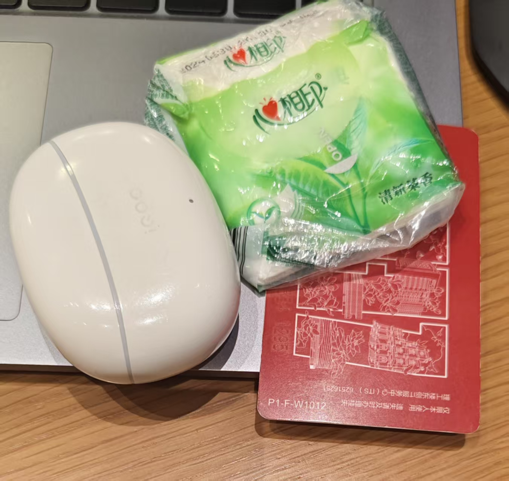

通勤
这里提供通勤准备、交通方式选择和时间利用的技巧，让你的通勤更加高效舒适。
1. 通勤准备
1.1 出门必带

- 裤子左边口袋：校园卡、纸巾、蓝牙耳机
- 裤子右边口袋：手机
1.2 前一晚准备
- 衣物准备：提前选好第二天要穿的衣服，避免早上匆忙选择。
- 包包整理：检查包包是否有必备物品，如钥匙、手机、钱包、工卡等。
- 午餐准备：如果带饭，前一晚做好并放入冰箱，早上直接带走。
- 路线规划：查看第二天的天气预报和交通状况，提前规划路线。
1.3 天气应对
- 雨天：准备雨伞、雨衣，穿防水鞋，避免被雨淋湿。
- 高温：戴遮阳帽、太阳镜，涂防晒霜，携带水壶补充水分。
- 寒冷：穿保暖衣物，戴帽子、手套，注意保暖。
- 大风：避免穿宽松衣物，戴帽子时选择有绳的款式，防止被风吹走。
2. 交通方式选择
2.1 公共交通
- 地铁：准时、快捷，适合长距离通勤。建议避开高峰期，或选择非热门线路。
- 公交：覆盖范围广，适合短途通勤。可使用公交卡或手机支付，方便快捷。
- 共享单车：适合最后一公里，灵活便捷。注意停车规则，避免乱停乱放。
- 共享汽车：适合多人拼车或需要携带较多物品的情况。提前预约，避免高峰期无车。
2.2 骑行/步行
- 路线选择：选择安全、平整的路线，避开交通繁忙的路段。
- 装备准备：骑行时戴头盔，穿运动鞋，携带水壶。
- 时间估算：提前测试路线，了解所需时间，避免迟到。
- 安全注意：遵守交通规则，注意车辆和行人，确保安全。
2.3 自驾
- 路况预判：使用导航软件实时查看路况，避开拥堵路段。
- 停车技巧：提前了解目的地附近的停车场，避免找不到停车位。
- 车辆检查：定期检查车辆状况，确保安全出行。
- 加油/充电：提前加油或充电，避免路上因能源不足而耽误时间。
3. 通勤时间利用
3.1 听书学习
- 有声书：选择感兴趣的书籍，利用通勤时间听书，增长知识。
- 学习英语：听英语播客、新闻或学习资料，提高英语水平。
- podcasts：订阅各类播客，了解行业动态、科技新闻或生活技巧。
3.2 规划当日行程
- 列出待办事项：使用手机备忘录或任务管理应用，规划当日工作和生活任务。
- 回复消息：利用通勤时间回复邮件、短信等，提高工作效率。
- 思考问题：整理思路，思考工作中遇到的问题或需要解决的事项。
3.3 休息调整
- 闭目养神：如果前一晚睡眠不足，可在通勤时闭目养神，恢复精力。
- 听音乐：选择轻松愉快的音乐，缓解压力，调整心情。
- 冥想：进行简单的冥想练习，放松身心，为一天的工作做好准备。
4. 应急处理
4.1 迟到应对
- 提前出门：预留充足的通勤时间，避免因突发情况而迟到。
- 备选路线：熟悉多条通勤路线，遇到拥堵时可及时切换。
- 及时沟通：如果预计会迟到，提前向领导或同事说明情况。
4.2 突发状况
- 公交延误：使用实时公交查询应用，了解车辆到站时间，合理安排。
- 天气突变：随身携带雨伞、外套等应急物品，应对天气变化。
- 身体不适：随身携带常用药品，如晕车药、感冒药等。
- 物品丢失：保持冷静，回忆可能的丢失地点，及时联系相关部门。